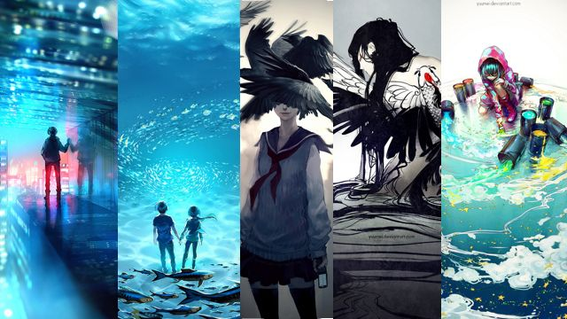

Yuumei
Yuumei es sin duda una de las artistas mas famosas de deviantart, un sitio de artistas donde esta increíble artista agarro vuelo, desde la temprana edad de 12 años se unio a la comunidad, y desde un inicio su genial estilo agarro vuelo, en especial por que es una artista que desde muy pequeña sufrío mucho a causa de su situación familiar, a pesar de ello la manera en que se desahogaba con sus obras fue lo que la hizo resaltar, su trabajo mas famoso en deviantart es una imagen llamada "Tape it Back Together" la cual refleja su dolor respecto a la separación de sus padres. Actualmente tiene 25 años, escribe libros para niños, es activista digital y artista independiente.